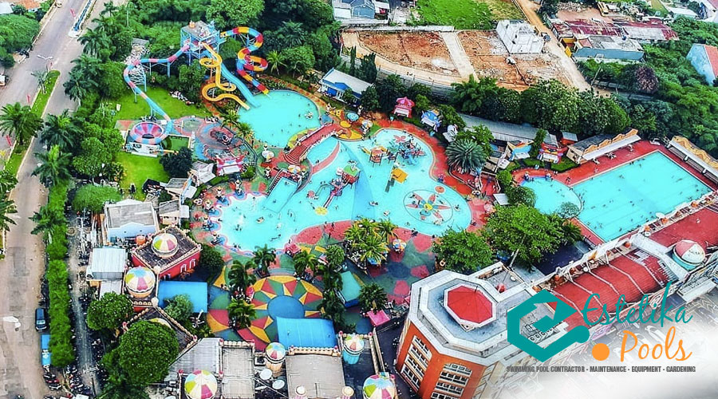
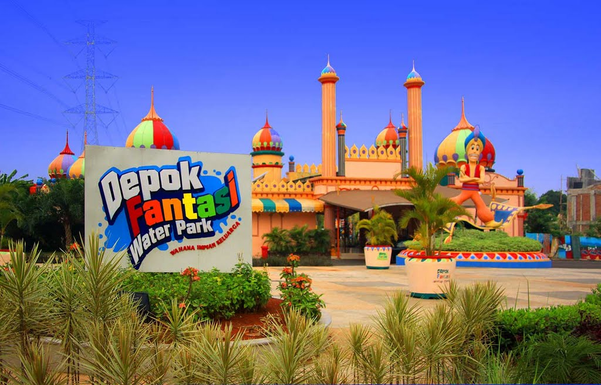

Buat warga Depok dan sekitarnya yang sedang bingung mau mengajak keluarga rekreasi kemana, datang aja ke Depok Fantasi Waterpark. Salah satu waterpark terbesar di kota Depok yang sering juga dikenal dengan Aladin Waterpark.
Dengan harga tiket Depok Fantasi Waterpark yang masih terjangkau sudah bisa bermain di berbagai wahana seru. Water park ini menawarkan beragam atraksi menarik bertemakan kegiatan air. Tidak hanya untuk anak-anak, berbagai wahana juga bisa dimainkan oleh orang dewasa dan lansia karena tersedia kolam renang khusus.
Depok Fantasi Waterpark adalah Pusat rekreaasi water theme yang ada di Grand Depok City (GDC). Salah satu wisata rekreasi yang merupakan suatu fasilitas oleh GDC dengan berbagai wahana permainan mulai dari Giant Slide, Triky Bucket, Estatic Tower, Jasmine Eshanted, Water Gun, Kiddy Pool
sampai dengan Splash Bucked. Selain hal tersebut, Depok Fantasi Waterpark telah hadir wahana baru lainnya yaitu ATV Motor, Bouncher, Water Ball, Flying Fox, Paddler Boat dan wahana Theater 4 dimensi yang merupakan
salah satu taman air di Kota Depok.
Depok Fantasi Waterpark menawarkan harga tiket masuk reguler yang berbeda tergantung hari kunjungan. Tapi jangan khawatir harga tiket masuk tentu masih terjangkau kantong. Berikut daftar harga tiket masuk Waterpark :
Alamat : Jl. Boulevard, Grand Depok City (GDC), Jawa Barat 16431

Menurut saya, tempatnya cocok banget lah buat qtime bareng temen, sahabat, pacar, gebetan, mantan. Karena emang Depok Fantasi Waterpark ini ada kolam renang khusus gitu. Keren ya.

Wisata satu ini recomended banget deh. Dari mulai kolam renang, wahana yang tersedia, dan cita rasa makanan disini bener-bener bikin hati puas dan bahagia banget deh ya.

Depok Fantasi Waterpark ini merupakan salah satu wisata air yang pertama kalinya bagi saya berasa di luar negeri deh ya. Makanan yang telah tersedia di wisata air ini pun enak & murah.
Develop By Kelompok 7 TI-05 @STT NF